Age guide: Kindergarten–Grade 2. Caregiver/educator review preview. Not for unsupervised infant digital product use. Not child-validated. Not publication-ready.
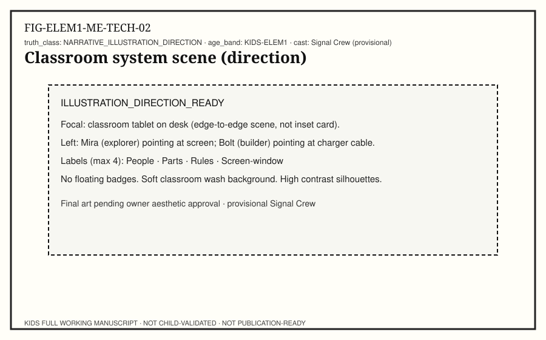
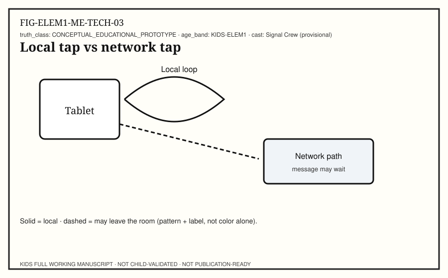
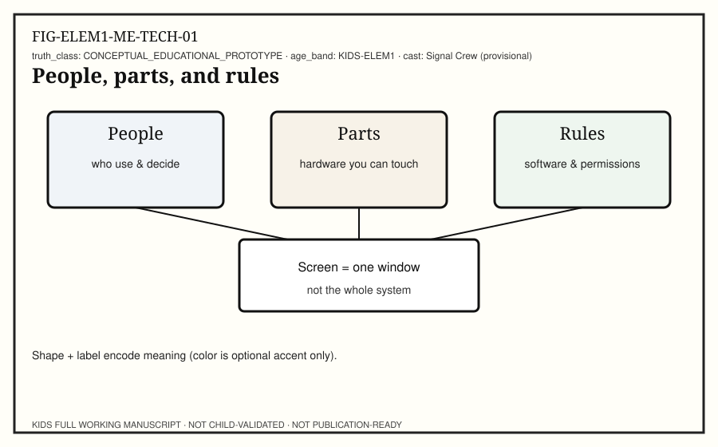
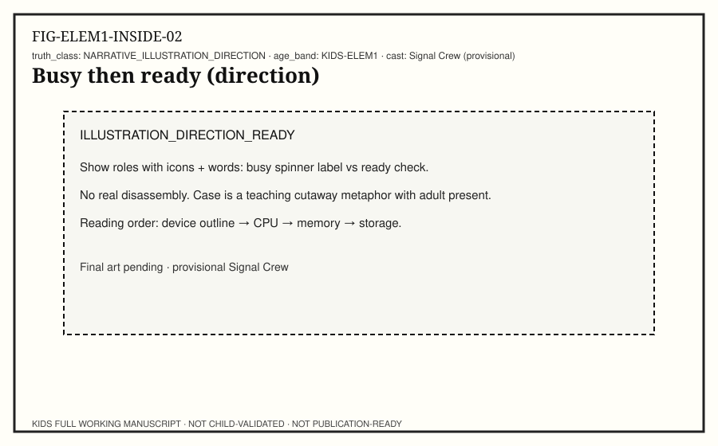
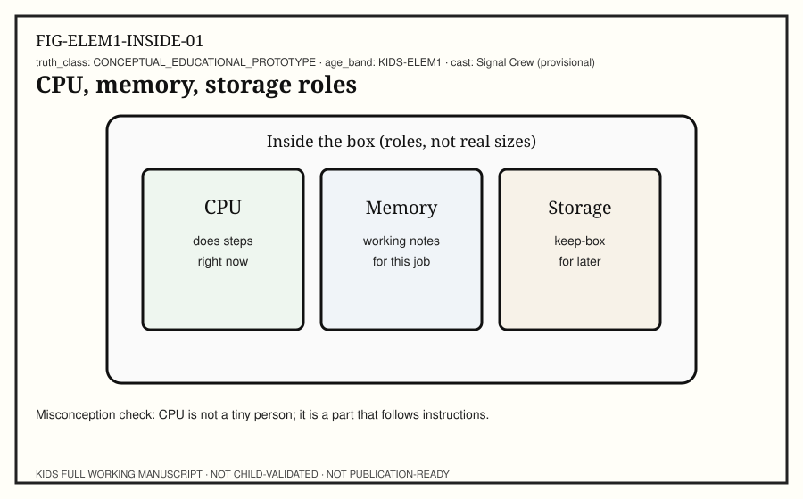
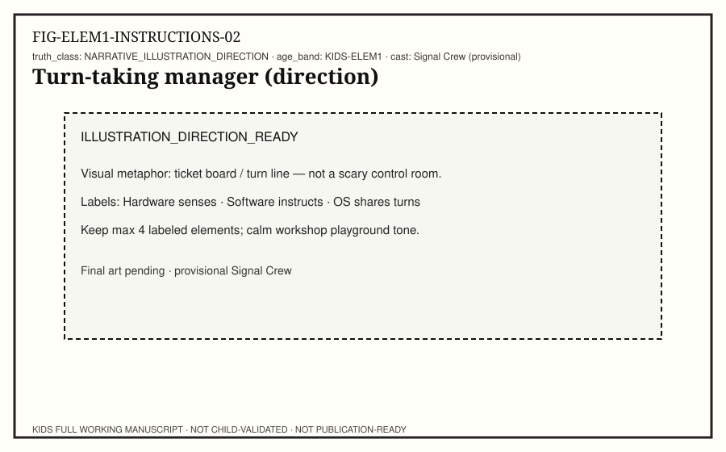
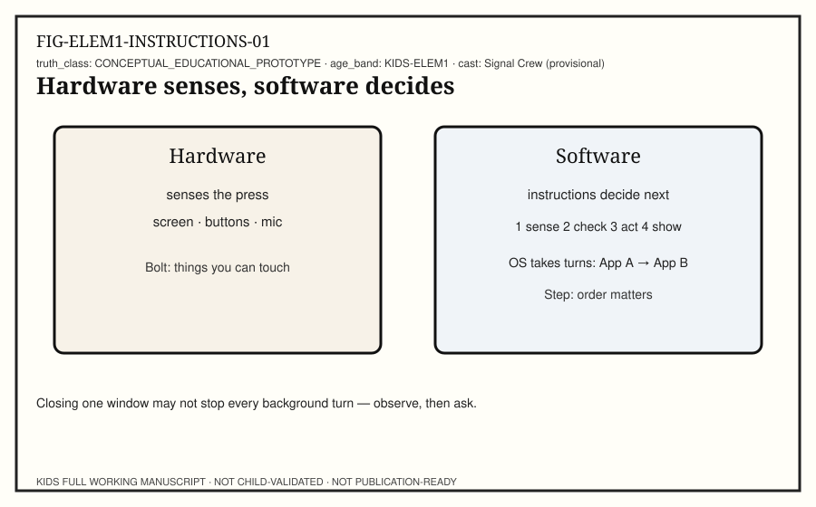
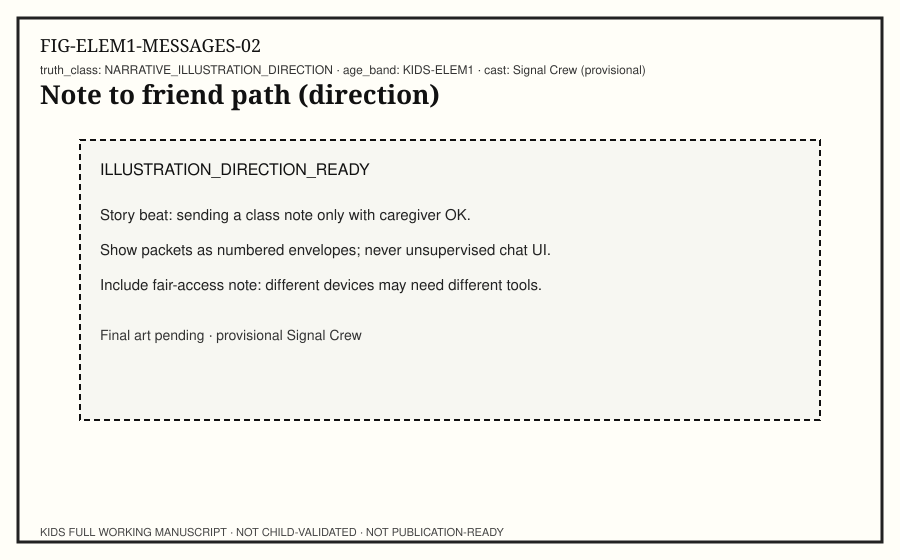
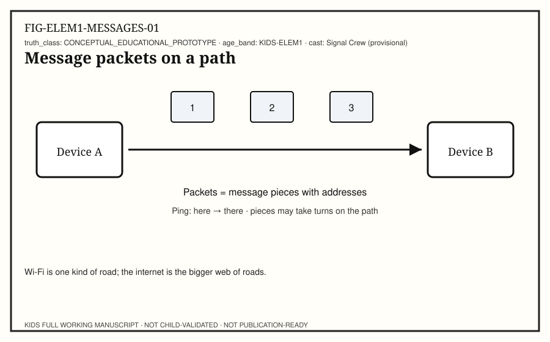
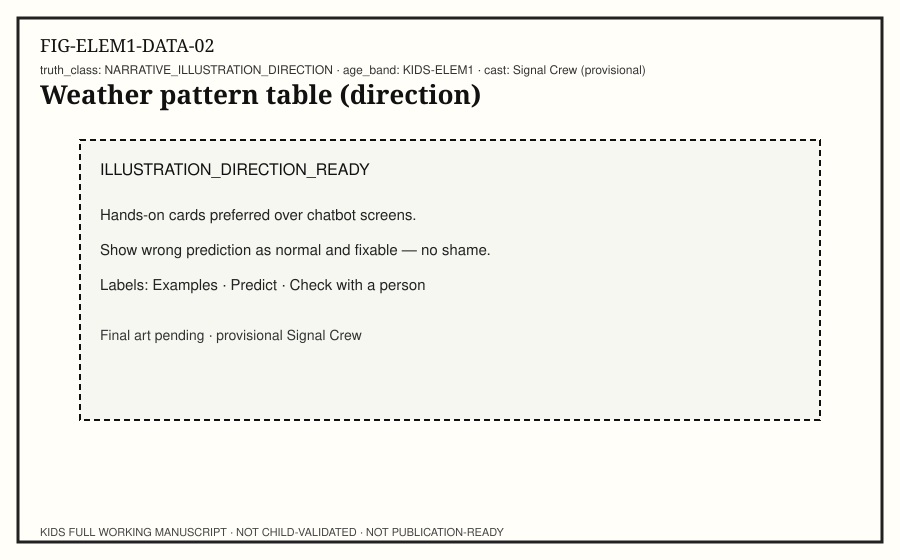
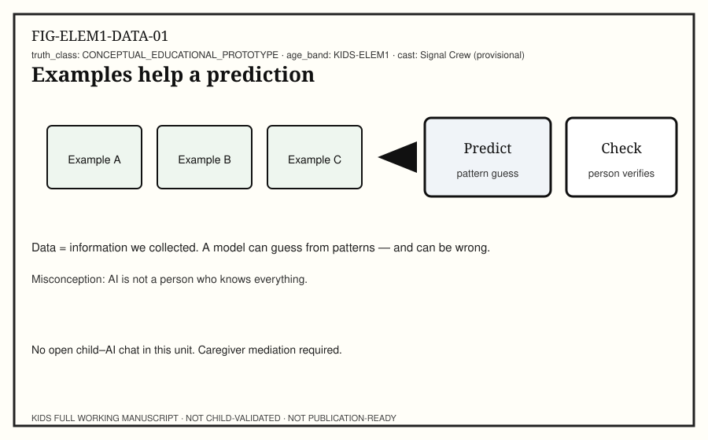
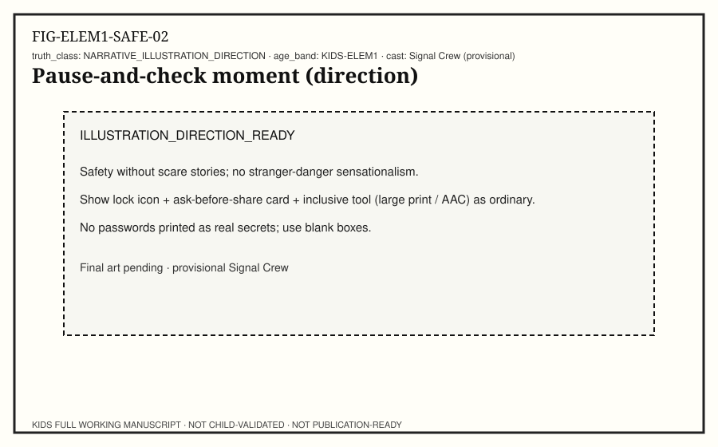
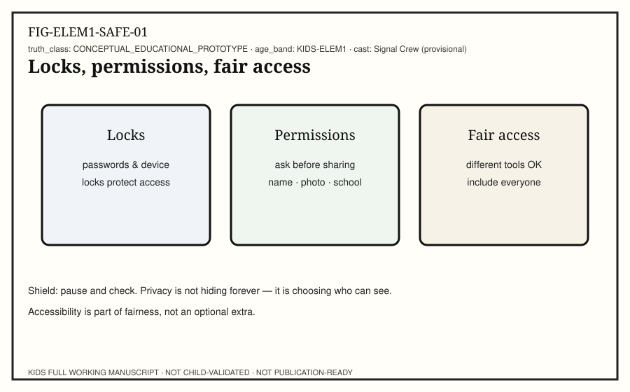
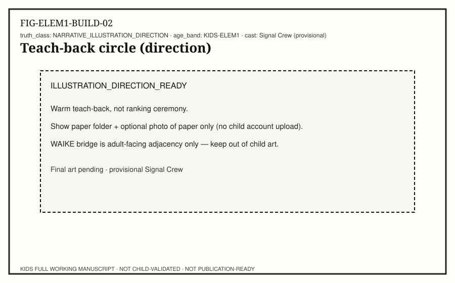
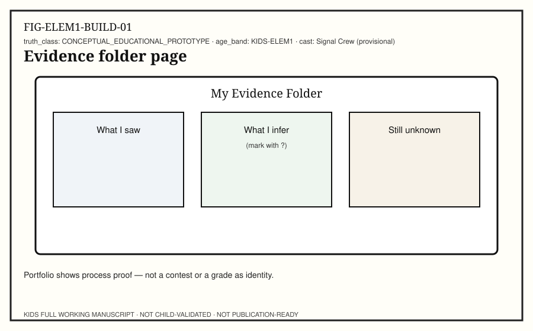
Close this preview anytime. No accounts. No tracking. Adult standards/provenance live outside child-facing blocks.